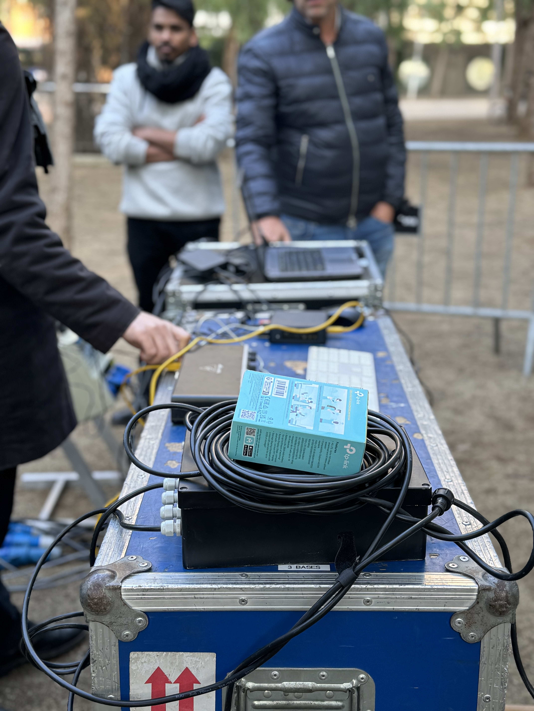
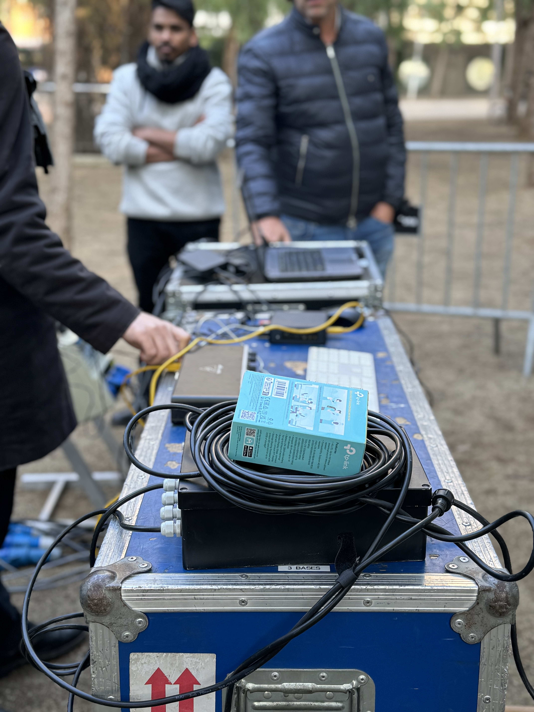

THE CONCEPT
During this second year we developed a collective project called MIRALLS DEL DEMÀ. Our team came together during the Interaction and Prototyping Seminar to create an installation that would bridge technology and consciousness about the future. The conceptual phase was particularly engaging as we explored ways to transform individual voices into collective visual experiences. We wanted to create more than just an interactive piece trying to develop a platform that would reflect humanity's relationship with its future. Through many discussions and iterations, we settled on the idea of using AI to transform spoken thoughts into dynamic visualizations, making abstract concerns about our planet's future tangible and immediate.


 
